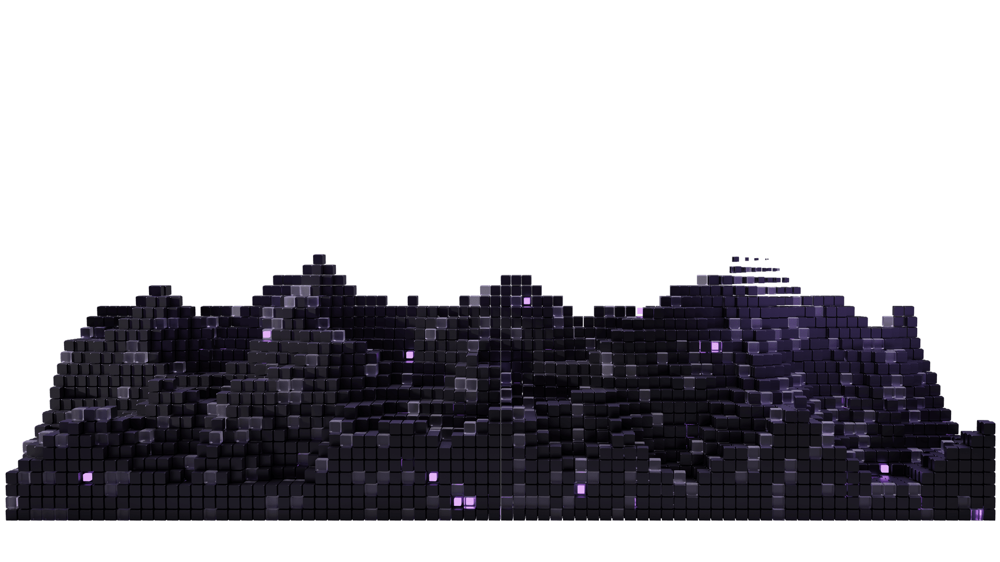
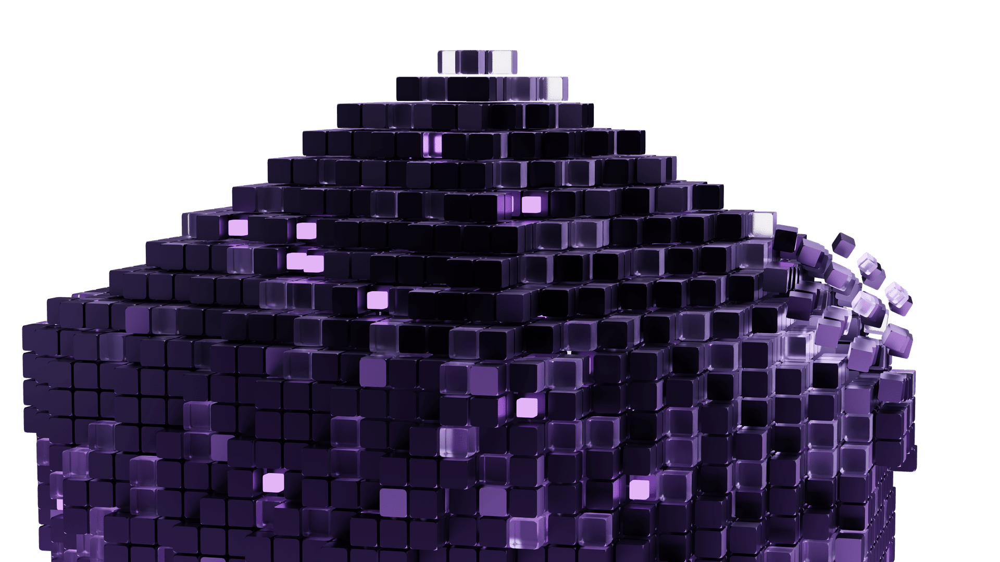
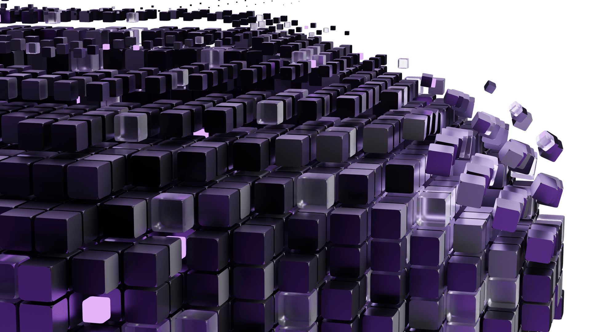
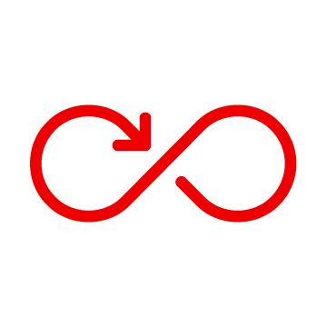
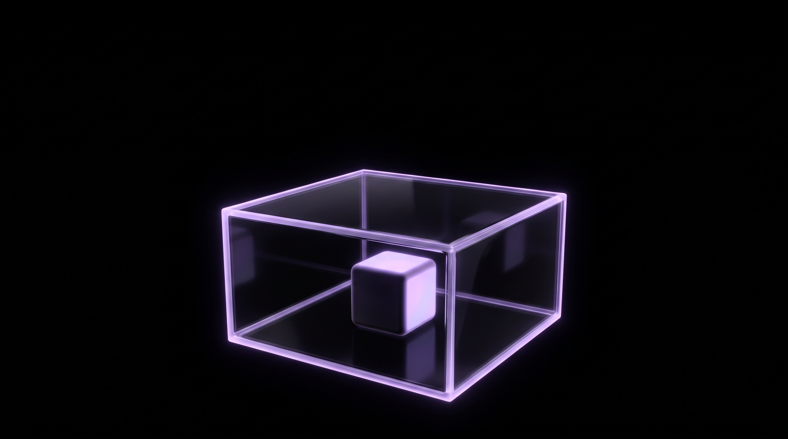
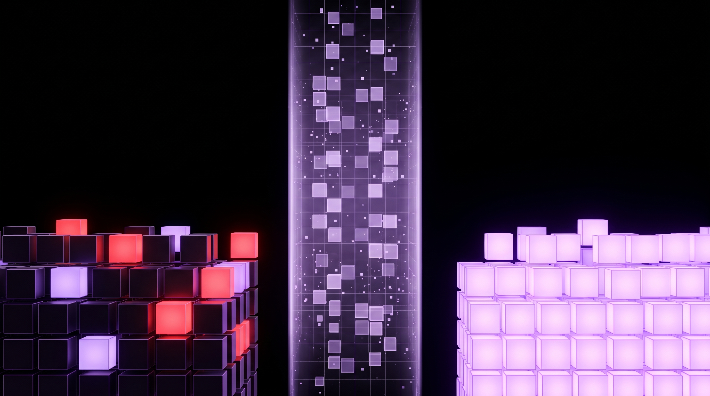
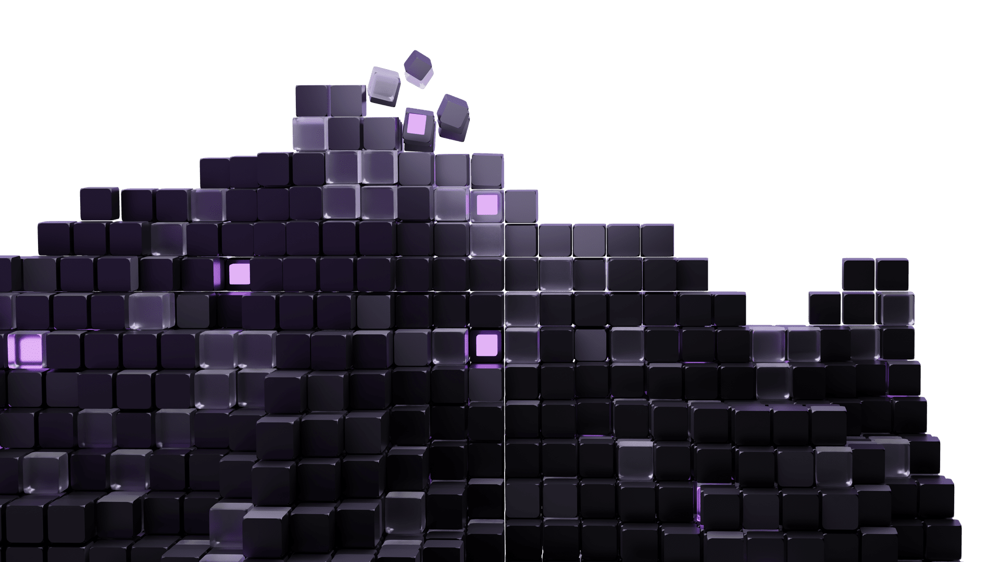
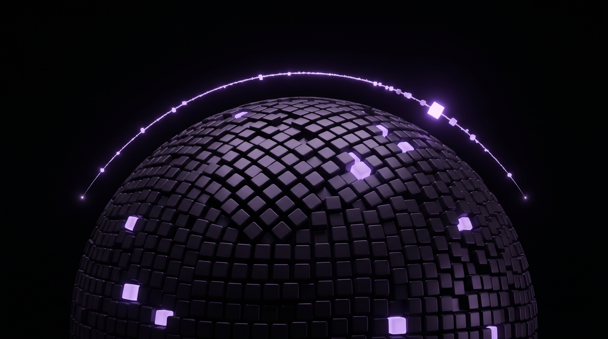

Your models. Your data. Your choice.

Across clouds, datacenters, and edge.
Are you ready?

A model that plans, uses tools, and acts for you.

Nine times the calls. Up to 70x. Every one is billed.
Optimized on your hardware. Guarded on every call.

If an agent misbehaves, it goes nowhere else.

The agent never holds the key. The gateway does.
Every step recorded. Tested against attacks.
Benchmarks. Red teaming. Every release.
No shared accounts. No anonymous agents.
Five controls. Every agent.

One control plane. One policy for all of them.
82% of enterprises found agents their security teams didn't know existed.

Your agents never stop. The platform scales with them.
Your cloud, your datacenter, your edge. Even air-gapped.
Any model. Any agent. Any hardware. Across clouds.